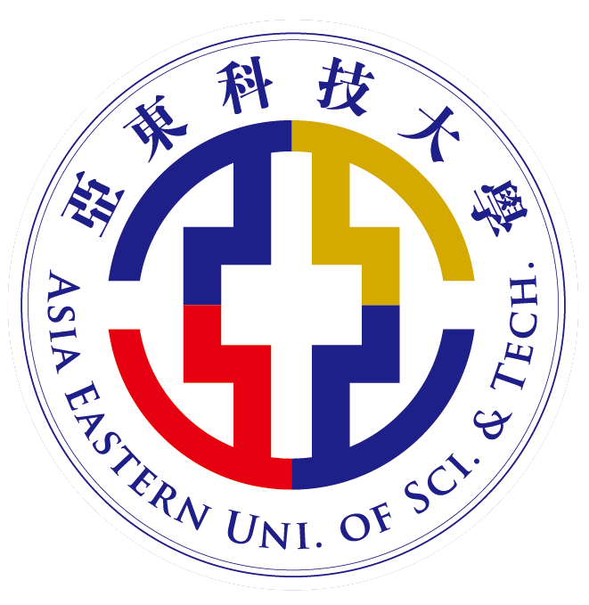

學歷

新竹縣私立義民高級中學 2016～2019
（廣告設計科）
熟悉運用PhotoShop、Illustrator、Indesign...影像繪圖軟體
在職科設計科中，積極參賽各項美展作品，其奠定美感觀察靈敏，是我在設計科中所修練來技能。

亞東科技大學 2019～2023
（資訊管理系）
#Python#ASP.NET#Visual Studio Code#Dreamweaver#Premiere等相關軟體程式開發、影片剪輯軟體，
因為高職為設計科關係，結合資管軟體課程，網頁就好像我的另一種圖紙，隨我創作，能夠結合網頁，
其Web(html、CSS)
前端網頁設計創作是我最感興趣。
✓ 大學四年積極參與程式志工相關競賽
✓ USR社會大學實踐計畫
工作經歷
山健包裝股份有限公司 2024 6～
（廠務助理）
#電腦印前設計
#印刷繪圖基本認知
#office文書處理軟體操作
本人在此職位中需迅速備版模具，整理收納，進一步了解傳產印刷版應用，及軟體印刷圖檔對稿，
操作ERP系統，
負責協助操作系統歸檔及模具出入庫標籤相關事宜，協助現場人員印刷版模具問題，
除了使用ERP及練就我問題解決溝通技巧的能力外，
更讓我了解傳產運作模式也是我在此職位中的收穫。